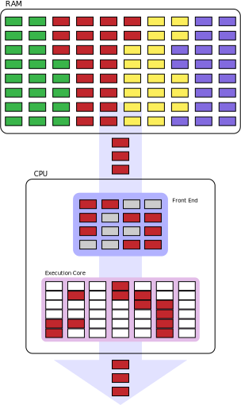
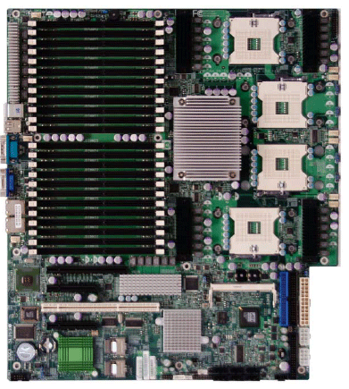
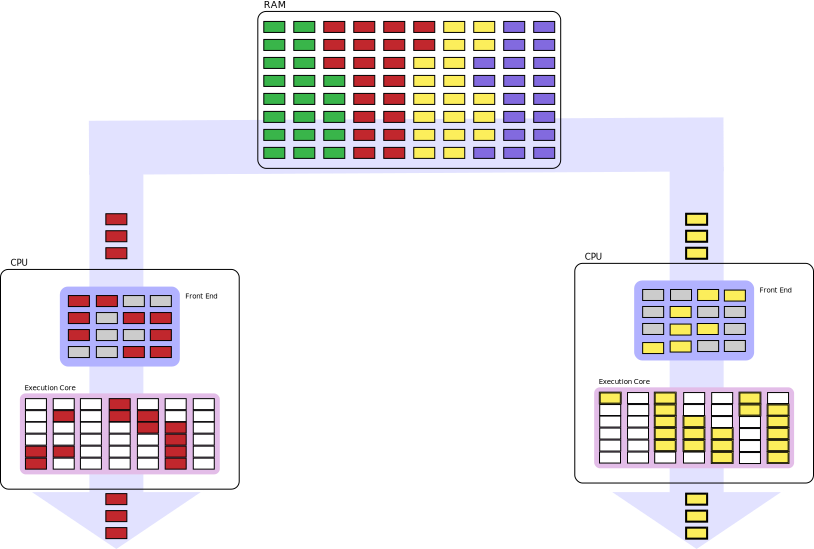

Прежде, чем мы начнём описывать особенности многоядерных систем, нужно вначале объяснить, зачем вообще они нужны, и как за счёт большего количества ядер и/или процессоров может достигаться положительный эффект. В данном случае мы для простоты считаем, что система, собранная на базе одного процессора с двумя ядрами, практически идентична по функционалу системе на базе двух процессоров с одним ядром — если ядра в обоих случаях идентичны*. Более подробное разъяснение можно прочитать в отдельном, более сложном материале, но хотя бы схематически описать ситуацию просто необходимо. Всё нижесказанное относится к концепции SMP (Symmetric Multiprocessing, cимметричная многопроцессорность), т.к. пока на x86 прижился именно этот вариант. Он требует, чтобы при любом числе процессоров (строго говоря — процессорных ядер) в системе они все были одинаковые, каждый может быть заменен любым другим, и все они осуществляют доступ к одному и тому же массиву памяти.
* — pаньше многоядерный процессор на массовом рынке был мечтой практически неосуществимой, поэтому в тех отраслях, где требовалась высокая производительность в специфических задачах, использовались системы не многоядерные, а многопроцессорные. Вместо того, чтобы интегрировать N ядер в один чип — на системную плату устанавливали N разъёмов, и в них — N одноядерных процессоров. Условно, современный десктоп на N-ядерном процессоре, можно приравнять к N-процессорной системе. Впрочем, многопроцессорные системы есть и сейчас — для тех, кого не устраивает максимально возможное количество ядер в одном CPU. Так, например, если вам нужна 16-процессорная (16-ядерная) система — то ввиду отсутствия 16-ядерных x86-процессоров (пока, на 2009 г.…), вам придётся согласиться на 4-процессорную систему, в которой у каждого процессора будет по 4 ядра.

Итак, наш главный вопрос: для чего всё это нужно? Каким образом за счёт увеличения количества ядер (процессоров) увеличивается быстродействие? Сразу расскажем, какой основной вопрос возникает при более детальном ознакомлении с многоядерными (многопроцессорными) системами: «Почему быстродействие увеличивается в разных случаях по-разному, а иногда не увеличивается вовсе?» Проще всего разъяснить это на примере простой и понятной аналогии с неким количеством работы, и неким количеством людей. Рассмотрим два самых распространённых варианта.
Вариант №1: несколько совершенно независимых друг от друга задач. Например, мы находимся в загородном доме, и нам необходимо наколоть дров и выкосить газон. Если у нас в распоряжении один человек — он будет вынужден сделать сначала одно дело, а потом другое, либо делать их параллельно, переключаясь между ними — но всё равно в один конкретный момент времени он будет занят чем-то одним. Если же есть два человека — то один может заняться колкой дров, а другой — косить газон. Заметьте: сами по себе задачи не стали выполняться быстрее — но мы экономим время за счёт того, что они выполняются параллельно. Продолжив аналогию, вы легко поймёте основной недостаток наращивания в данной ситуации количества людей до бесконечности (а они у нас олицетворяют процессорные ядра или одноядерные процессоры): рано или поздно для ещё одного человека просто не найдётся работы. Или ресурсов: например, колоть дрова можно и вдвоём — но что делать, если у нас всего один топор?
Вариант №2: одна частично или полностью распараллеливаемая задача. Почти идеально распараллеливаемая задача (при условии, как уже было упомянуто выше, наличия должного количества ресурсов) — это та же колка дров, или, например, мытьё полов. Каждому в руки по швабре и ведру, каждому свой участок пола — и вперёд! Вы, правда, наверняка заметите, на основании банального житейского опыта, что ещё и задача должна быть соответствующего масштаба: хорошо мыть полы вчетвером в большом доме, но совершенно бессмысленно — в одной комнатушке. В случае с многоядерностью всё совершенно аналогично: быстро выполняемая задача, даже если она хорошо параллелится, вызывает давно известный эффект: согласование действий между выполняющими работу начинает занимать время, сопоставимое с временем выполнения самой работы каждым исполнителем. Русская пословица «у семи нянек дитя без глаза» примерно характеризует данную ситуацию.
Более сложный случай — например, варка борща. Конечно, хозяйка может поручить кому-то почистить овощи, кому-то нарезать, и т.д., но всё равно на некотором этапе у нас начнётся достаточно длительный процесс (собственно варки), в котором участие более чем одного человека совершенно не требуется. Это и есть частично распараллеливаемая задача: некоторые её этапы могут выполняться параллельно, а некоторые — нет. Совершенно очевидно, что даже если выделить на выполнение этой задачи двух людей, в 2 раза её выполнение не ускорится (а если четырёх — то в случае с борщом, четвёртый может оказаться в большинстве случаев лишним). И у многоядерных процессоров на частично распараллеливаемой задаче не все ядра могут задействоваться одновременно всё время. А значит, некоторые из них как минимум иногда будут простаивать.
Подытожим: добавление ещё одного ядра не всегда приводит к ускорению, а даже если и приводит — то не всегда настолько, сколько можно было бы ожидать в идеальном случае. Фактически, всё зависит от решаемых задач (используемых программ). Некоторые задачи параллелятся хорошо, некоторые — не очень, некоторые не параллелятся вообще. Почти идеально в большинстве случаев параллелятся две независимых задачи, но… для этого нужно, чтобы у вас достаточно часто возникала потребность решать несколько независимых задач одновременно! Говоря конкретней, двухъядерный процессор на программах обычного пользователя в среднем получит ускорение примерно раза в полтора, а 4-ядерный — примерно в два по сравнению с одноядерным. А вот при запуске «профессиональных» программ кратность ускорения часто почти равна числу ядер.

Первое, что надо сказать о ядрах — в одном процессоре их бывает много. В вашем их, скорее всего, не менее двух, а вообще их может быть от 1 до 6 (скоро — и больше). Все ядра одинаковые, но кроме них в процессоре есть и обслуживающие их общие блоки — общий кэш, контроллер памяти и шины обмена с другими процессорами и/или с чипсетом. В новейших процессорах к этому списку скоро добавятся и специализированные ядра, например, для 3D-графики и декодирования видео. Когда говорят об устройстве ядер, то имеют ввиду каждое ядро многоядерного процессора (даже если говорится «ядро» в единственном числе).
Как было сказано, у многоядерности есть ограничения по увеличению производительности. Когда задачи или их части выполняются параллельно, ядра конкурируют за доступ к общим блокам. Например, если запустить две задачи, сильно зависящие от пропускной способности памяти, и которым не хватит объёма кэша каждого ядра, то производительности общего для ядер кэша, а также контроллера памяти может быть недостаточно, чтобы насытить сразу два ядра. В результате они оба будут простаивать до половины времени — реальное увеличение скорости по сравнению с однопоточным исполнением может быть околонулевым. Противоположная ситуация, когда программы оптимизированы под многоядерные процессоры и не перегружают разделяемые ресурсы, выглядит примерно так: процессор исполняет столько потоков, сколько у него ядер, причём каждый поток в основном использует блоки своего ядра, а общение ядер между собой, а также с памятью достаточно редко, чтобы даже исполнение нескольких потоков не перегружало общие элементы процессора и не приводило к задержкам работы ядер. Подобрать по такому критерию несколько разных программ весьма сложно, а вот оптимизировать одну — удаётся куда чаще. Именно в таких случаях и удаётся получить то, что называется линейным ростом производительности от числа потоков (фактически — ядер): 2 ядра работают вдвое быстрее одного, 4 — вдвое быстрее двух, и т.д.. Всё вышесказанное касается и многопроцессорных систем, где число ядер каждого CPU надо умножить на число последних.
Дополнительную сложность вносит поддержка некоторыми процессорами технологии Hyper-Threading (гиперпоточности). Она позволяет одному ядру работать за два — хотя и не так эффективно, как реально существующая пара ядер, зато куда дешевле. При этом операционная система сообщает о процессоре с вдвое большим числом ядер, поскольку видит число ядер логических (по максимальному количеству одновременно запускаемых программ), а не физических (по числу реально выполняемых). Изменение производительности может быть от почти незаметного замедления до внушительного (20-50 %) ускорения и сильно зависит от набора исполняемых программ, а в среднем же ускорение равно 10-15%. К сожалению, чем лучше программа оптимизирована под настоящую многоядерность, тем меньше она выиграет от «виртуальной» за счёт Hyper-Threading.
«Процессорное ядро» (как правило, для краткости его называют просто «ядро») — это конкретное воплощение (микро)архитектуры (т.е. архитектуры в «аппаратном» смысле), являющееся стандартом для целой серии процессоров. Например, K10 — это микроархитектура, которая лежит в основе многих сегодняшних процессоров AMD: Athlon II, Phenom, Phenom II, Opteron. Микроархитектура задаёт общие принципы: «средний» по длине конвейер, исполнение до трёх команд за такт, предсказание переходов и внеочередное исполнение, и прочие «глобальные» особенности. Ядро — более конкретное воплощение. Например, процессоры микроархитектуры К10 с двумя ядрами, без поддержки многопроцессорности и кэша L3, с шиной HyperTransport частотой в 2 ГГц — это более-менее полное описание ядра Regor для Athlon II.
Можно сказать что «ядро» — это конкретное воплощение определённой микроархитектуры «в кремнии», обладающее (в отличие от самой микроархитектуры) набором строго обусловленных характеристик. Микроархитектура — аморфна, она описывает общие принципы построения процессора. Ядро — микроархитектура, «обросшая» всевозможными параметрами и характеристиками. Чрезвычайно редки случаи, когда процессоры сменяли микроархитектуру, сохраняя название. И, наоборот, практически любое наименование процессора хотя бы несколько раз за время своего существования «меняло» ядро. Например, общее название серии процессоров AMD — «Athlon 64» — это одна микроархитектура (K8), но целых 13 ядер — от Sledgehammer (2003 г.) до Huron (2009 г.). Разные ядра, построенные на одной микроархитектуре, могут иметь в том числе разное быстродействие.
Ревизия — одна из модификаций ядра, крайне незначительно отличающаяся от предыдущей, почему и не заслуживает звания «нового ядра». Как правило, из выпусков очередной ревизии производители процессоров не делают большого события, это происходит «в рабочем порядке». Так что даже если вы покупаете один и тот же процессор, с полностью аналогичным названием и характеристиками, но с интервалом где-то в полгода — вполне возможно, фактически он будет уже немного другой. Выпуск новой ревизии, как правило, связан с какими-то мелкими усовершенствованиями. Например, удалось чуть-чуть снизить энергопотребление, понизить напряжение питания, что-то оптимизировать, или была устранена пара мелких (иногда не очень…) ошибок. С точки зрения производительности была всего пара примеров, когда бы одна ревизия ядра отличалась от другой настолько существенно, чтобы об этом имело смысл говорить. Хотя чисто теоретически возможен и такой вариант — например, подвергся оптимизации один из блоков процессора, ответственный за исполнение нескольких команд. Подводя итог, можно сказать что «заморачиваться» ревизиями процессоров чаще всего не стоит: в очень редких случаях изменение ревизии вносит какие-то кардинальные изменения.
Как правило, именно этот параметр в просторечии именуют «частотой процессора». Хотя в общем случае определение «частота работы ядра» всё же более корректно, так как совершенно не обязательно все составляющие CPU функционируют на той же частоте, что и ядро (наиболее частым примером обратного являлись старые «слотовые» x86 CPU — Intel Pentium II и Pentium III для Slot 1, AMD Athlon для Slot A — у них L2-кэш функционировал на 1/2, и даже иногда на 1/3 частоты работы ядра). Примерно также сегодня в большинстве процессоров работает кэш L3 — на своей отдельной частоте, меньшей, чем у каждого ядра. Ещё одним распространённым заблуждением является уверенность в том, что частота работы ядра однозначным образом определяет производительность. Это дважды не так.
Во-первых, каждое конкретное процессорное ядро (в зависимости от того, как оно спроектировано, сколько содержит исполняющих блоков различных типов, и т.д. и т.п.) может исполнять разное число команд за один такт, частота же — это всего лишь количество таких тактов в секунду. Таким образом (приведённое далее сравнение, разумеется, очень сильно упрощено) процессор, ядро которого исполняет 3 инструкции за такт, может иметь на треть меньшую частоту, чем процессор, исполняющий 2 инструкции за такт — и при этом обладать полностью аналогичным быстродействием.
Во-вторых, даже в рамках одного и того же ядра, увеличение частоты вовсе не всегда приводит к пропорциональному увеличению быстродействия. Здесь вам очень пригодятся знания, которые вы могли почерпнуть из раздела «Общие принципы взаимодействия процессора и ОЗУ». Дело в том, что скорость исполнения команд ядром процессора — это вовсе не единственный показатель, влияющий на скорость выполнения программы. Не менее важна скорость поступления команд и данных на CPU. Представим себе чисто теоретически такую систему: быстродействие процессора — 10'000 команд в секунду, скорость работы памяти — 1000 байт в секунду. Даже если принять, что одна команда занимает не более одного байта, а данных у нас нет совсем, с какой скоростью будет исполняться программа в такой системе? Не более 1000 команд в секунду, и производительность CPU тут совершенно ни при чём: мы будем ограничены не ей, а скоростью поступления команд в процессор. Таким образом, следует понимать: невозможно непрерывно наращивать одну только частоту ядра, не ускоряя одновременно подсистему памяти, так как в этом случае начиная с определённого этапа, увеличение частоты CPU перестанет сказываться на увеличении быстродействия системы в целом.
Наконец, у компании Intel есть технология TurboBoost, особенность которой в том, что процессоры с её поддержкой вообще не имеют никакой конкретной частоты чего-либо. Смысл TurboBoost — увеличивать частоту загруженных ядер в зависимости от числа простаивающих, а также от температуры и энергопотребления всего процессора. В результате «нормальная» частота (написанная на коробке процессора или в прайс-листе) реально почти всегда будет превышена на 133-666 МГц (в мобильных процессорах серии Core i7 возможен разгон на 1333 МГц, если работает только одно ядро), причём всё время меняясь. Грубо говоря, можно сказать, что TurboBoost даст примерно +10% к скорости «за просто так».
Виртуализация в вычислительной технике — это возможность запускать несколько операционных систем (и программы из-под каждой из них) так, что они будут работать будто бы на своих отдельных компьютерах (т.е. подразумевается виртуализация «железа» по отношению к програмам). Впервые она появилась аж в 60-е годы на мейнфреймах IBM и до недавнего времени была полезна лишь для программирования и высокопроизводительных сетевых серверов. Однако новая ОС фирмы Microsoft Windows 7 уже требует аппаратную поддержку виртуализации в процессоре, если предполагается запускать 32-битные программы, написанные для Windows XP и более ранних версий (т.е. читай — всегда). Так зачем нужна эта аппаратная поддержка, если ранее и программной справлялись?
Аппаратная поддержка виртуализации в процессоре фактически означает наличие дополнительного поднабора команд, который позволяет инициировать, вызвать, завершать и переключать виртуальные ОС быстрее и с более надёжной изоляцией друг от друга (что важно для устойчивости и безопасности всей системы), чем программными средствами. Как обычно, оба главных производителя CPU стараются подчеркнуть преимущества своих реализаций, так что им даны разные имена: Intel Virtualization Technology (Intel VT) и AMD Virtualization (AMD-V). Причём между ними действительно есть небольшая разница, но, опять же, крайне незначительная и не приводящая к несовместимости. С точки зрения пользователя вердикт прост — поддержку виртуализации в процессоре лучше иметь, чем не иметь, т.к. даже если она не пригодится сейчас, то, возможно, пригодится через пару лет, а разница в стоимости у процессоров с и без неё почти незаметна. Более того — в новых CPU, виртуализацию поддерживают все модели, так что «хочешь, не хочешь»…
Раньше, когда небо было голубее, пиво — вкуснее, а девушки — красивее (прим. ред.: мнение редакции не всегда совпадает с мнением авторов, особенно насчёт девушек), процессоры называли просто: имя производителя + название модельного ряда («линейки») + частота. Например: «AMD K6-2 450 MHz». В настоящее время оба основных производителя от этой традиции отошли и вместо частоты употребляют какие-то непонятные циферки, обозначающие невесть что. В первой версии статьи на этом месте было краткое объяснение того, что же эти циферки обозначают. Однако с тех пор (а прошло всего 3 года) оба основных производителя x86 CPU неоднократно меняли и дополняли эти правила, так что фактически уследить за ними в рамках даже регулярно обновляющегося цикла статей невозможно, да и не очень требуется. Есть способы лучше. Если вам нужно узнать основные характеристики какого-то процессора, проще всего просто набрать его полное имя в Гугле или Яндексе, и среди первой десятки результатов вы наверняка найдёте краткое описание его внутренностей. Если же требуется сравнить разные процессоры, названия которых вы не помните или не знаете, подойдёт Википедия: вот список всех процессоров AMD, а вот — процессоры Intel. Для любителей экзотики есть ещё процессоры VIA. Ссылки на детальные списки процессоров по линейкам (Celeron, Sempron, Core i7, Phenom, Nano и т.п.) см. в самом внизу страницы напротив слова Lists.
Что касается общего положения, то у обоих основных производителей ситуация примерно такая (с многочисленными исключениями, разумеется). Сначала указывается название линейки процессоров. Оно говорит об общей направленности применения: бюджетные, основные (mainstream), дешёвые и экономные (для нетбуков), основные и экономные (для ноутбуков), просто быстрые и быстрые с поддержкой многопроцессорности (для рабочих станций и серверов). После указывается номер поколения этой линейки — не обязательно порядковый, но чем больше — тем «круче». Затем, на том месте, где ранее была частота — 2-4-значное число «рейтинга» производительности, обозначающее сразу несколько методов её увеличения:
Что касается общего положения, то у обоих основных производителей ситуация примерно такая (с многочисленными исключениями, разумеется). Сначала указывается название линейки процессоров. Оно говорит об общей направленности применения: бюджетные, основные (mainstream), дешёвые и экономные (для нетбуков), основные и экономные (для ноутбуков), просто быстрые и быстрые с поддержкой многопроцессорности (для рабочих станций и серверов). После указывается номер поколения этой линейки — не обязательно порядковый, но чем больше — тем «круче». Затем, на том месте, где ранее была частота — 2-4-значное число «рейтинга» производительности, обозначающее сразу несколько методов её увеличения:
Причём это число не является оценкой самой производительности, т.е. вы не только не сможете сказать, насколько модель 2300 быстрее модели 1200, но даже и какая из них быстрее в конкретной программе. Можно лишь утверждать, что с точки зрения производителя, модель 2300 сложнее в производстве, чем модель 1200 — у неё выше некоторые технические характеристики, больше ядер или кэша, и т.д. и т.п. При этом подразумевается, что раз уж модель с более высоким номером снабдили всеми этими «наворотами» — то она и работать будет быстрее (иначе зачем было снабжать?) Однако практика свидетельствует, что сбывается это предположение отнюдь не всегда.
Также иногда к «рейтингу» спереди или сзади добавляются 1-2 буквы для обозначения класса потребления энергии: для немобильных процессоров — просто «обычный» и «экономный», а для мобильных — более детальная градация.
Никак это не возможно, потому что скорость не измеряется в мегагерцах, как не измеряется расстояние в килограммах. Однако господа маркетологи давно уже поняли, что в словесном поединке между физиком и психологом побеждает всегда последний — причём независимо от того, кто на самом деле прав (прим. маркетологов: хотите об этом поговорить?) Поэтому мы и читаем про «сверхбыструю 1066-мегагерцевую шину», мучительно пытаясь понять, как скорость может измеряться с помощью частоты. На самом деле, раз уж прижилась такая извращённая тенденция, нужно просто чётко представлять себе, что имеется в виду. А имеется в виду следующее: если мы «закрепим» ширину шины на N битах — то её пропускная способность действительно будет зависеть от того, на какой частоте данная шина функционирует, и какое количество данных она способна передавать за такт. По обычной процессорной шине с «одинарной» скоростью (такая шина была, например, у процессора Intel Pentium III) за такт передаётся 64 бита, то есть 8 байт. Соответственно, если рабочая частота шины равна 100 МГц (100'000'000 тактов в секунду) — то скорость передачи данных будет равна 8 байт * 100'000'000 герц ≈ 763 мегабайта в секунду (а если считать в «десятичных мегабайтах», в которых принято считать потоки данных, то ещё красивее — 800 мегабайт в секунду). Соответственно, если на тех же 100 мегагерцах работает DDR-шина, способная передавать за один такт удвоенный объём данных — скорость вырастет ровно вдвое. Поэтому, согласно парадоксальной логике господ маркетологов, данную шину следует именовать «200-мегагерцевой». Хотя реальная частота работы у вышеописанных шин одинаковая — 100 мегагерц. Вот так «мегагерцы» и стали синонимом скорости.
Впрочем, независимые источники также указывают производительность шины не в герцах, а в транзакциях (т.е. актах передачи данных) в секунду — МТ/s или GТ/s (с приставками мега и гига). Это число надо умножить на ширину шины в байтах. Тем не менее, главное здесь — выучить наизусть один простой принцип: если уж мы занимаемся таким извращением, как сравнение скорости двух шин между собой «в мегагерцах» — то они обязательно должны быть одинаковой ширины и одного типа передачи за такт. Иначе получается как в одном форуме, где человек всерьёз доказывал, что пропускная способность AGP2X («133-мегагерцевая», но 32-битная шина) — выше, чем пропускная способность FSB у Pentium III 800 (реальная частота 100 МГц, ширина 64 бита).
Как уже было сказано, в режиме DDR по шине за один такт передаётся удвоенный объём информации. Правда, в документах, ориентированных больше на прославление достижений производителей, чем на объективное освещение реалий, почему-то не всегда указывают одно маленькое «но»: режимы удвоенной скорости включаются только при пакетной передаче данных, а она всегда включена не во всех типах шин. Т.е. если мы запросили из памяти парочку мегабайтов с адреса X по адрес Y — то да, эти два мегабайта будут переданы с удвоенной скоростью. А вот сам запрос на данные может быть передан по шине и с «одинарной» скоростью! Соответственно, если запросов у нас много, а размер пересылаемых данных не очень велик, то количество данных, которые «путешествуют» по шине с одинарной скоростью (а запрос — это тоже данные) будет почти равно количеству тех, которые передаются со скоростью удвоенной. Это касается шин доступа к памяти и старых шин связи с чипсетом, но новые шины включают пакетную передачу для любых видов информации. Новые — это HyperTransport (она же — НТ, но не путайте с HyperThreading) для процессоров AMD и QPI для Intel. У новичков есть четыре главных особенности, отличающие их от предыдущих решений: эти шины уже (как правило, 32 бита), в несколько раз быстрее по частоте, могут соединять только 2 устройства (на старые шины можно «повесить» и более) и, самое интересное, — они полнодуплексные. Т.е. фактически состоят из двух разнонаправленных половинок, позволяющих одновременно передавать данные в обе стороны. Так что для оценки скорости надо различать три цифры: частота работы шины (как правило, в спецификациях указывается именно она), количество передач данных в одном направлении (вдвое больше частоты за счёт DDR) и число совокупных передач данных в обоих направлениях (ещё вдвое больше). Теперь, если умножить второе или третье число на ширину шины в байтах, мы получим заветные гигабайты в секунду (точнее, млрд. байт/с) — в одном или двух направлениях.
Возможно, через несколько лет таким же изменениям подвергнется и шина между процессором и памятью — она станет узкой, сверхбыстрой и двухнаправленной.
Однако возможность подключать несколько модулей памяти наверняка сохранится.
У любого процессора есть не только интерьер, но и экстерьер — «одёжка», по которой его встречают. Не пользователи, конечно, а коллеги-компоненты по компьютеру. Чтобы процессор вообще заработал, требуется соблюсти несколько важных пунктов.
Во-первых, у процессора есть корпус определённого размера с определённым количеством выводов в определённом расположении — всё это должно точно подходить к разъёму для CPU на материнской плате (компактные процессоры для неттопов и нетбуков продаются вместе с мат. платами сразу запаянные в них). Тип разъёма (сокета) обозначается буквой или числом выводов. Для каждого процессора указывается тот разъём, который для него подходит. Причём «подходит» означает не только механическую совместимость (т.е. процессор физически умещается в разъёме в единственно верном положении, обозначенном специальной меткой-ключём), но и электрическую, силовую и интерфейсную. Последнее гарантирует, что выводы и контакты расположены в ожидаемом порядке, на выводы питания подаётся именно то напряжение и та сила тока, которая нужна, а к информационным выводам подключены нужные шины и линии управления чипсета и периферии. Впрочем, установка процессора нового поколения вместо старого даже при совпадении разъёма не всегда закончится удачно, потому что…
Во-вторых, BIOS (загрузочная программа, стартующая сразу после включения компьютера и записанная в микросхеме флеш-памяти на материнской плате) ожидает обнаружить лишь те виды процессоров, которые в него заложили разработчики системной платы. Но если ваш новый процессор вышел позже, то для поддержки всех его функций придётся обновить и сам BIOS, новую версию которого («прошивку») нужно загрузить с сайта производителя материнской платы, убедившись, что в ней есть поддержка новинки. Впрочем, иногда это не требуется — если новый CPU не сильно отличается от старого, то и обновление BIOS'а ему не нужно, но это должно быть явно сказано производителем процессора или системной платы.
В-третьих, даже если процессор точно заработал всеми своими наворотами и гигагерцами, есть ещё кое-что, без чего его работа может очень быстро закончится — охлаждение. При покупке стоит обратить внимание на то, сколько процессор выделяет энергии (эта величина почти равна её потреблению) — параметр TDP (Thermal Design Power), измеряемый в ваттах. Фактически это требование к системе охлаждения — именно столько тепла должен отводить кулер или радиатор, чтобы процессор не перегревался (для каждого процессора и вида корпуса есть своя максимально допустимая температура, гарантирующая продолжительную надёжную работу). Если перегрев всё-таки произойдёт, процессор сначала станет снижать фактическую частоту работы (причём различными программами-мониторами это не обязательно фиксируется), а затем может и вовсе подать сигнал аварийного отключения питания всего компьютера. Для этого в каждый современный CPU встроен датчик температуры, выдающий показания системной плате, а также собственным механизмам защиты, главная цель которых — не дать физически сжечь процессор (ценой потери производительности и даже данных).